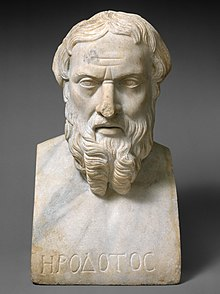

History
echCon SoCal is a full day event co-organized by multiple organizations including Tech Coast Angels , UCSD, TIE, OPEN, SDVG, IGNITE, Connect and others. We’re bringing together the brightest minds in technology, investments, academia and research who are driving innovation and defining the future.

Along with his contemporary Thucydides, he helped form the foundations for the modern study of past events and societies.[16] Their works continue to be read today, and the gap between the culture-focused Herodotus and the military-focused Thucydides remains a point of contention or approach in modern historical writing.
In East Asia, a state chronicle, the Spring and Autumn Annals, was reputed to date from as early as 722 BC, though only 2nd-century BC texts have survived.
The title "father of history" has also been attributed to Sima Qian and Ibn Khaldun in their respective societies